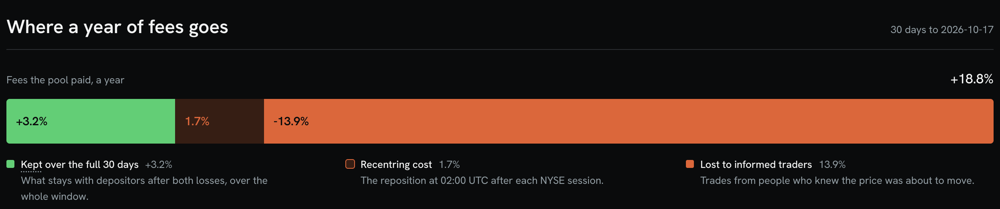
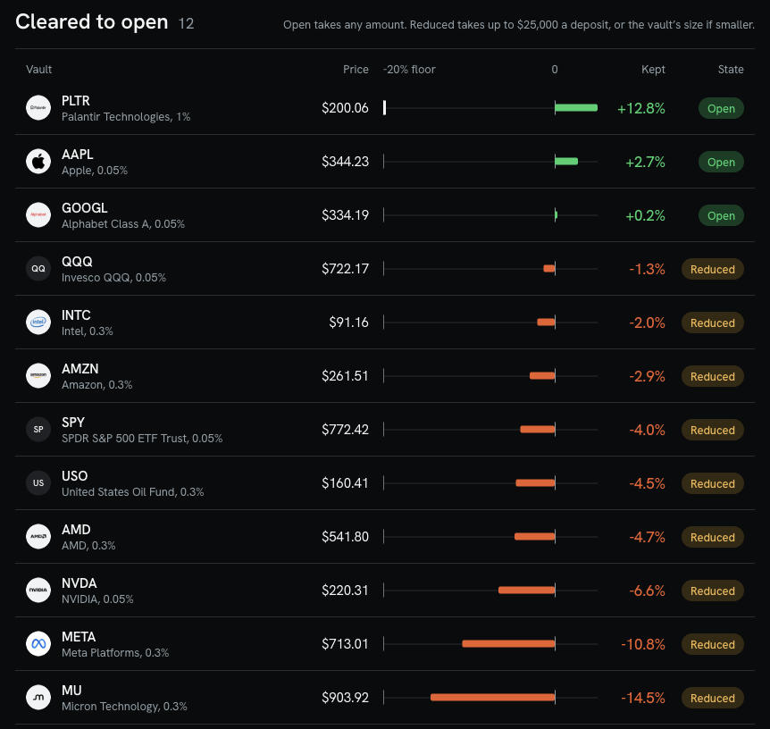

A pool page shows fee APR. It does not show what an LP loses to fast traders.
AMD
131.6%
PLTR
160.4%
SPY
3.5%
Fee APR as one live vault page shows it, 46 times apart on one page, with no loss column.
On the chain's AAPL pool, 13.9 points of 18.8% a year in fees went to informed traders.
Source: TickerSpring Vaults page, copied as displayed, vaults/COMPETITORS.md, 2026-10-17. AAPL: live app, 30 days to 2026-10-17.
Deposit the Stock Token itself. See what you keep. Exit in kind any time.
No sale to join
The vault takes AAPL, NVDA or PLTR, not USDG and not a pair.
Fees beside what you keep
Every vault page shows both side by side, before you sign.
Both tokens come back
Exit in kind has no oracle, no swap and no pause in the way.

Source: live app, uptick-fi.pages.dev/vault/aapl, 30 days to 2026-10-17. contracts/SECURITY.md for exit in kind.
Live and reviewed. Outreach to 50 named people starts this week.
App
uptick-fi.pages.dev, 17 vaults, each with its door and its reason
Agent API
An MCP endpoint and JSON. A closed vault returns its reason.
Security
Four review rounds, the fourth ended SHIP. 80 of 80 security tests pass.
Outreach
26 holders and LPs, 18 projects and 6 investors, each message ready to send
Interviews
uptick-fi.pages.dev/talk, five questions for holders, open
Source: live app and Worker read 2026-10-23. contracts/SECURITY.md. gtm/uptick/PIPELINE.md, TARGETS.md, EVIDENCE.md.
Fees are not yield. We replayed 3,059,881 swaps to measure what an LP keeps.
Pool
Fees the pool paid What an LP kept
Fees
Kept
PLTR
Uniswap v4, 1%
152.9%
+12.8%
PLTR
Uniswap v3, 0.3%
103.5%
-20.3%
GME
Uniswap v3, 1%
173.7%
-144.2%
SPCX
Uniswap v3, 0.05%
115.4%
-199.5%
Source: keeper/data/replay.json, held-out half, 15 days to 2026-10-17, annualised. Kept is fees less losses to informed traders and rebalancing cost. web/lib/vault-universe.json for the swap count.
A vault opens only where the replay says it holds. 5 of 17 stay shut.
Open
3 vaults, any amount
AAPL, GOOGL and PLTR kept money in both halves.
Reduced
9 vaults, up to $25,000
The weaker half sits between -20% and break-even.
Closed
5 vaults, no deposits
The weaker half kept less than the -20% floor.

Source: web app vault list from web/lib/vault-universe.json, captured 2026-10-22. keeper/src/evidence.ts for the floor.
None of four vault codebases has a settings timelock or stock-split handling. Uptick has both.
Arrakis V2, Gamma, Veda, AutoRange
Uptick
Owner settings
Change in one transaction
24 hour queue, calldata emitted
Stock split
No multiplier logic
ERC-8056 gate
Deposit priced from
Pool spot or a stored rate
Lowest of Chainlink, TWAP and spot
Source: competitors/*/STUDY.md with file and line citations. Uptick: contracts/SECURITY.md. Full table in the appendix.
Depositors keep every fee at launch. Uptick takes a share only where they still keep money.
Uptick's share
0% to 10%
0% at launch. Switched on per vault, behind the 24 hour queue, where the replay keeps money net of it.
Entry fee
0.35%
1% on the 1% pools. It stays in the vault for the holders who stay.
Exit in kind
$0
in either token, at any time.
Revenue grows with the Stock Tokens in the vaults and the fees their pools pay.
The market is already on the chain: 189,012 NVDA holders and $623.9k of LP fees a week.
NVDA holders
189,012
SPCX has 114,222. Blockscout, 2026-10-16.
Traded in 7 days
$488.40M
on the 17 vault tokens' Uniswap v3 and v4 pools.
Paid to LPs in 7 days
$623.9k
the fee pot a vault shares in.
About half of the top ten tokens' supply already sits in AMM pools.
Source: docs/research/founder-house/PLATFORM-TRUTH.md (Blockscout, 2026-10-16) and vaults/VENUES.md (blocks 87,352,064 to 93,292,983, 2026-10-13 to 2026-10-20).
One founder built the contracts, the replay engine, the app and the agent API.
Kamal
Founder. github.com/kamalbuilds
Contracts
StockVault and StockVaultV4, ERC-4626. 80 of 80 security tests, 50 mutation checks.
Replay engine
3,059,881 swaps across 17 vault pools.
App
17 vault pages, each with its gate and its reason.
Agent API
MCP endpoint with four tools.
Source: this repository. contracts/SECURITY.md, web/lib/vault-universe.json, api/src/mcp.ts.
We are raising $2M to put every Stock Token on Robinhood Chain to work.
$2M pre-seed
A vault for every Stock Token the day it lists, on v3 and v4 pools, with an external audit and two engineers on the keeper and risk engine.
In 12 months
$50M of Stock Tokens earning in Uptick vaults, and vault shares accepted as collateral by Robinhood Chain lenders.
From this room
Holders who will size a first deposit, and the lenders, range vaults and wallets that carry the kept APR.
Uptick shows which of your Stock Tokens can earn, and how much you would keep.
The evidence behind each slide, and the two Open House canvases.
Bands and sessions
One band for every token loses. Weekends pay 13.64 per $1 lost, NYSE hours 1.16.
Gate table
All 17 tokens, band, weaker half and door.
Code, venues, security, agents
Four codebases compared, the venue census, four review rounds, the MCP responses.
Open House canvases
Go-to-market and product, filled in for Uptick.
Source: this repository. Every figure carries its file on the slide it appears on.
One band for every token would lose: the band that kept +29.4% on NVDA kept -58.8% on GOOGL.
Kept APR in the calibration half, by band. Each token picks its own, and the held-out half decides the door.
Band ±1.5%
Band ±5%
Band ±20%
NVDA
+29.4%
+12.2%
+3.3%
AAPL
-11.1%
+2.5%
+1.6%
GOOGL
-58.8%
-5.6%
+0.2%
The picks: NVDA ±1.5%, AAPL ±7.5%, GOOGL ±20%. The bands run from ±1.5% to ±20% across the 17 tokens.
Source: keeper/data/band-grid/grid-summary.json (calibration half, 2026-09-17 to 2026-10-02), keeper/data/params.json.
A weekend pays $13.64 in fees for every $1 lost to fast traders. NYSE hours pay $1.16.
NYSE hours
$1.03 to $1.35
Weeknights
$1.30 to $3.90
Weekends
$3.94 to $33.27
13.64 pooled
1.16 pooled
2.74 pooled
5.1M swaps, 54 days, three pools
NVDA, SPCX and TSLA on Robinhood Chain. The weekend ratio beats the NYSE ratio in 22 of 23 pool-weeks.
The engine drops what its own replay refutes
A schedule built on the clock met its bar on 0 of 3 tokens, and random session labels beat it in 64 of 64 cells. Twelve off-chain signals failed their shuffled control. Uptick acts on pool and band, measured per token.
Source: README.md, spikes/stock-vaults/FINDINGS.md, spikes/offchain-signals/FINDINGS.md. Fee earned per $1 lost to informed flow, 1 hour markout, window 2026-08-24 to 2026-10-17.
Each token picks its band on the first half. The second half decides the door.
AAPL kept +2.7% a year in its weaker half
Band ±7.5%. First half +2.7%, held-out half +3.9%. Open. PLTR keeps +12.8% on its v4 pool.
NVDA's tight band kept +29.4% on the first half
The held-out half kept -6.6%. The gate shows the held-out number, so NVDA is reduced.
The conservative figure decides
The upper accounting bound sits beside it on every vault page.
Token
Band
-40-20 floor0+20
Weaker half
Door
PLTR
±3.5%
+12.8%
Open
AAPL
±7.5%
+2.7%
Open
GOOGL
±20%
+0.2%
Open
QQQ
±10%
-1.3%
Reduced
INTC
±20%
-2.0%
Reduced
AMZN
±7.5%
-2.9%
Reduced
SPY
±2.5%
-4.0%
Reduced
USO
±20%
-4.5%
Reduced
AMD
±20%
-4.7%
Reduced
NVDA
±1.5%
-6.6%
Reduced
META
±15%
-10.8%
Reduced
MU
±15%
-14.5%
Reduced
TSLA
±7.5%
-27.4%
Closed
CRCL
±20%
-28.4%
Closed
MSTR
±3.5%
-37.1%
Closed
GME
±2.5%
-144.2%
Closed
SPCX
±1.5%
-199.5%
Closed
Source: web/lib/vault-universe.json, keeper/data/params.json. Weaker half of two 15 day halves, 30 days to 2026-10-17. Bars end at -40.
None of four vault codebases has a settings timelock or stock-split handling. Uptick has both.
Codebase
Owner settings
Stock split
Deposit priced from
AutoRange
24 setters, each takes effect at once
Raw balances and ticks, no multiplier
Pool spot
Arrakis V2
Manager, fee, pool and router change at once
Plain ERC-20 shares, no multiplier
Pool spot
Gamma
setFee, setTwapCheck, ownership: one transaction
Raw balances, no multiplier
Pool spot, optional 1 hour TWAP filter
Veda
Bounds, fees and roots apply in the same transaction
No ERC-8056 or rebase logic
Stored rate, no maximum age
Uptick
24 hour queue, calldata emitted, void after 7 days
ERC-8056 gate: price-checked paths close around each multiplier change
Lowest of Chainlink, TWAP and spot
Session-fee hooks (Fables, SessionFeeHook, Bellswap, ClosingBell) price swaps. Range vaults pick bands by hand. Uptick publishes the calibration for every token and opens a door only where it holds.
Source: competitors/*/STUDY.md with file and line citations (Arrakis V2, Gamma Hypervisor, Veda BoringVault, AutoRange). Uptick: contracts/SECURITY.md.
The fees sit in more than one pool. The v4 adapter widens the pot a vault can reach.
All LP fees, 7 days
$623.9k
Reachable in v3
$184.8k
Reachable in v4
$198.5k
Pons launchpad pools
$0 to an outside LP
$488.40M of Stock Token volume moved through Uniswap v3 and v4 on the 17 tokens in 7 days. Launchpad pools pair a stock with a memecoin across 256 traded pools and $9.95M, and take their fee in the hook.
PLTR, band 350 bps
The v3 0.3% pool keeps -20.3% in its weaker half and stays closed.
+12.8%
What the PLTR v4 1% pool keeps in its weaker half in the same replay, net of the PoolManager's protocol fee. PLTR launches open on it.
Built: the v4 position adapter
StockVaultV4 holds a position in a hookless v4 pool, with the same guards and the same evidence gate.
Source: docs/research/founder-house/vaults/VENUES.md (2026-10-13 to 2026-10-20, read over the public RPC). keeper/data/replay.json, PLTR pools.
Four review rounds, each re-reading the last round's fixes. The fourth ended SHIP.
Round 1
1 High and 3 Medium, all closed
A same-block share lock and a spot-to-TWAP band against deploy sandwiches. Deposits priced at the lowest of Chainlink, TWAP and spot. A 24 hour owner queue. A corporate-action gate on the token's oracle pause and multiplier.
Round 2
Round 1 fixes confirmed
Swap floors include the pool fee, so 1% pools rebalance. Router deposits clear at $500, $2,000 and $10,000.
Round 3
TWAP bound set to 30 bp
Entry fee raised to 35 bp, so a deposit ahead of a price update does not pay. Exits work on every fee tier.
Round 4
SHIP: no Critical, High or Medium
Residuals are published with their measured bounds and the lever that moves each.
80 of 80
security tests pass on a fork of the real pools
50
mutation checks: break a guard, see red, restore, see green
24 h
queue on every owner setting, with the full calldata emitted
In kind
exit stays open when everything else is closed
Source: contracts/SECURITY.md and the four reports in contracts/ (SECURITY-REVIEW, SECURITY-REREVIEW, SECURITY-REVIEW-3, SECURITY-REVIEW-4, 2026-10-20). Contracts final, creation-code hash pinned.
Agents read the same evidence the app shows.
list_vaults
Every vault with its door, fee APR and kept APR.
get_vault_evidence
Replay pools, gate rule, reason and swap count.
prepare_deposit
Unsigned transactions. The user signs and sends.
prepare_withdraw
Unsigned exit transactions, in kind included.
One endpoint, MCP over Streamable HTTP. A closed vault returns its gate reason, so an agent never routes a deposit past the door.
GET /vaults/aapl, gate.reason
"Open: the weaker half of the 30-day replay kept 2.7% a year, at or above break-even, across 95,275 swaps."
tools/call prepare_deposit, id spcx, amount 10
{"error": "Closed: the weaker half kept -199.5% a year, below the -20% floor."}
GET /vaults/aapl, pools: fee APR, first half, held-out half
Pool
Fees
First
Held-out
v3 0.05%
18.8%
+2.7%
+3.9%
v4 0.3%
23.0%
+7.6%
+0.3%
v3 0.3%
11.3%
-16.4%
-12.8%
Evidence API and MCP: uptick-evidence.earn-shield-alerts.workers.dev; figures as keeper/src/evidence.ts builds them from keeper/data/replay.json (2026-10-22). llms.txt and the evidence API are open to any agent.
Source: keeper/src/evidence.ts on keeper/data/replay.json, api/src/mcp.ts, web/public/llms.txt.
Go-to-market canvas
Arbitrum Open House Singapore
Team name
Uptick Kamal, founder
One line
Deposit a Stock Token, see what you keep, earn the fee share.
Who buys, who uses
Buys and uses: Stock Token holders on Robinhood Chain, 189,012 of them on NVDA. Also uses: agents on the MCP endpoint. Carry the kept APR: lenders, wallets and range vaults.
First reachable audience
26 holders and LPs who posted about stock-token yield in the last 30 days, led by @WazzCrypto (62,039 followers) and @Nibel_eth (36,595).
3 distribution channels
1. Named DMs and replies on X 2. 15 minute calls with 18 projects 3. /talk interviews and the open evidence API
Core message
Fees are not yield. Uptick shows what you keep and opens a vault only where past swaps say it holds.
Proof you need first
The first mainnet deposit into an open vault (AAPL, GOOGL or PLTR) and one signed holder LOI.
The intro that helps
Arbitrum Foundation to Gaëtan Thabot, Robinhood Chain partnerships, to put the vault list in front of Stock Token holders.
5 named targets
1. @WazzCrypto, LPs stock tokens by hand 2. Zona (DataLust): vault shares as collateral 3. AutoRange (elkiyo.eth): list Uptick vaults 4. Rabby (Galen Yuan): show vault positions 5. Doppler (Austin Adams): route idle reserves into vaults
The ask this weekend
The Thabot intro, calls with Zona and AutoRange, three holders sizing a first deposit. uptick-fi.pages.dev/talk
Deposit a Stock Token, see what you keep, earn the fee share.
Who is this for
@WazzCrypto, 62,039 followers, LPs tokenized stocks on Robinhood Chain by hand: "I'd have been massively profitable on RH chain if I had stuck to LP'ing tokenized stocks."
What they do today
Hold NVDA idle, or LP by hand: pick the pool, the fee tier and the band, then read a fee APR with no loss column.
The wedge
Kept APR, measured per token on 3,059,881 replayed swaps. A vault opens only where it holds: 3 open, 9 reduced, 5 closed.
Why now
195 Stock Tokens listed, NVDA at 189,012 holders, 78% of flow outside NYSE hours. Kraken and Kamino launched xStocks yield vaults on Solana.
Alternatives and gaps
HedgeHood: weekly covered calls on NVDA. TickerSpring, AutoRange: USDG in. Morpho: lenders earn, holders do not. None shows kept APR.
Why onchain, why Arbitrum
Robinhood Chain is an Arbitrum Orbit chain. The Stock Token, its Chainlink feed and the USDG pool share one chain, so valuation and exit need no bridge. Agents read it over MCP.
First 5 to 10 users, named, reachable this month
@WazzCrypto, @Nibel_eth, @0xFent_, @JollyDinger, @cryptonoah11, @omarsaleh66, @0x_iroh, @0xlippit. Each one posted about stock-token LPs or yield in the last 30 days and has a message queued.
Ship this weekend
The first mainnet vaults once the deployer is funded. The 60 second agent demo over MCP. /talk interviews in the room.